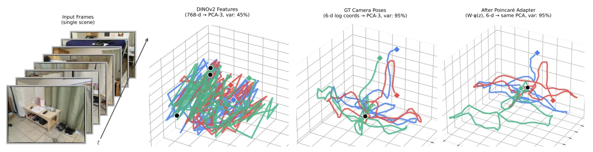
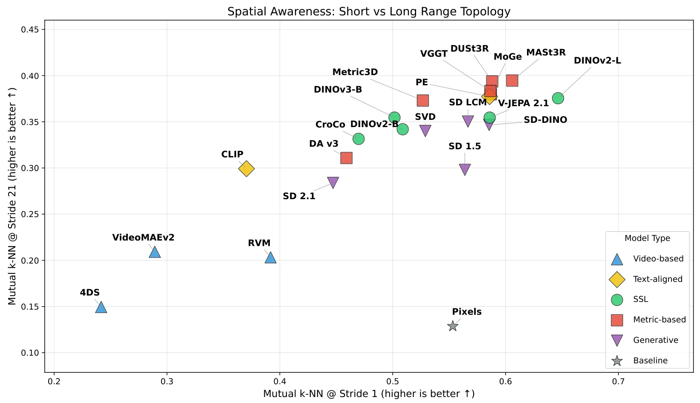
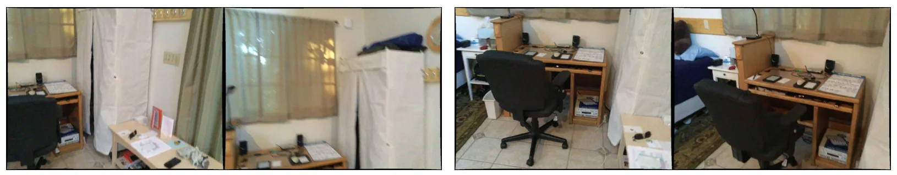
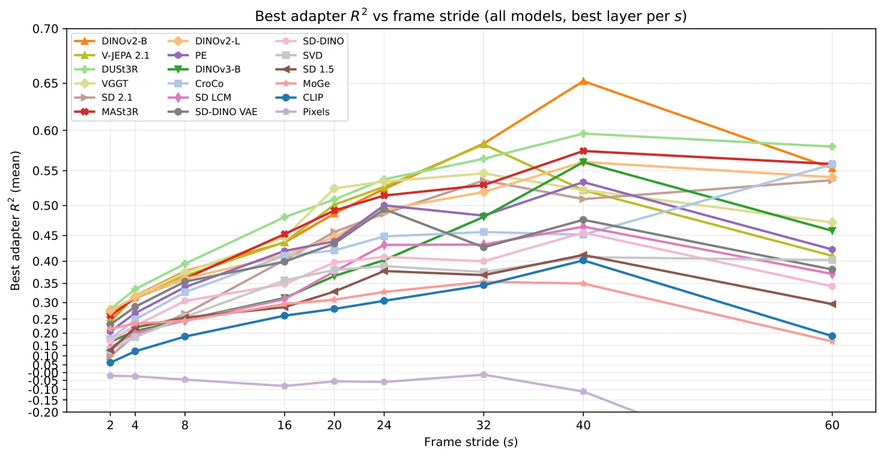
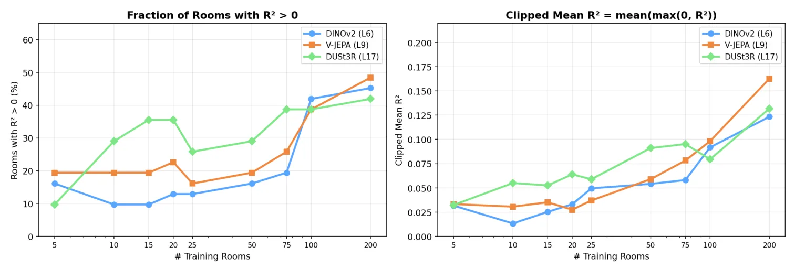
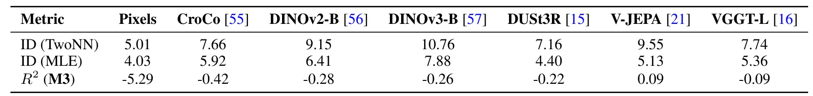
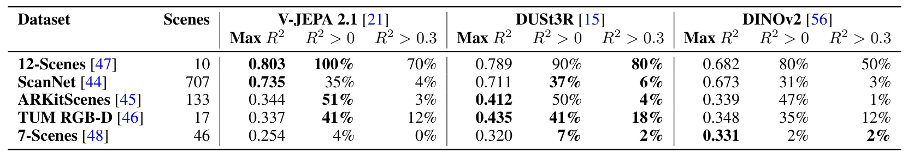

SeeSE3：视觉特征中三维空间结构的涌现SeeSE3: Emergence of 3D Space in Vision Features
直接触及视觉里程计、定位与 SE(3) 表示，研究视角新；latent-space navigation 的尺度、长序列漂移和实际精度仍需正文验证。
一句话工作总结
通过邻域拓扑和 SE(3) 运动探针揭示基础视觉特征中的三维潜在子空间，并据此直接执行里程计与定位。
摘要
本文研究视觉基础模型的表示是否反映三维欧氏空间的内在性质，而不只探测深度、法向等图像中心量。作者从拓扑与几何两方面评估视觉特征空间和 SE(3) 的关系：mutual-neighborhood 指标测量特征邻域与空间拓扑的对齐，Poincaré Adapter 则检验静态场景中相机运动几何能否从潜在位移线性读取。实验发现，自监督视觉模型即使没有直接三维监督或主动交互，也包含与三维欧氏空间强相关的潜在子空间；据此提出不显式重建三维结构、直接在潜在空间执行视觉里程计与定位的方法。
In this paper, we ask whether vision foundation models construct representations that reflect the intrinsic properties of 3D Euclidean space. Unlike previous works that probe 3D awareness of vision features by regressing image-centric quantities such as depth or normals, we investigate the relation between the structure of the space of visual features and the group of Euclidean transformations $SE(3)$. We propose a set of probes to evaluate this relation from both topological and geometric perspectives: a mutual neighborhood metric that measures the alignment between feature neighborhoods and spatial topology, and a Poincaré Adapter to test the linear accessibility of the geometry of camera motion from latent displacements in static scenes. We show that self-supervised vision models, which, in principle, have not been trained with direct 3D supervision or active agency, possess latent subspaces that are remarkably strongly correlated with three-dimensional Euclidean space, when probed correctly. Building on this insight we propose a new class of "Latent-Space Navigation" techniques that perform visual odometry and localization purely in the latent space, bypassing the need for explicit 3D reconstruction.
中文解读摘录
图表/页面预览
{kind=link}

{kind=link}

{kind=link}

{kind=link}

{kind=link}

{kind=link}

{kind=link}
